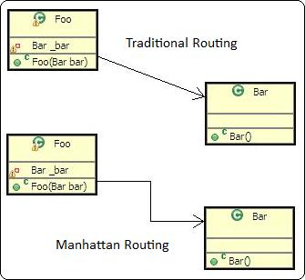

There are many ways to customize Green's look and feel. This is a comprehensive list of user-changeable settings that will affect various aspects of Green's display.
Bendpoints
Bendpoints will allow you to freely manipulate the positioning of your relationship
arcs. They can be found by selecting a relation arc and then finding the click-
and-drag point in the middle. This is the easiest solution to arcs stacking
ontop of each other, and allows for more freedom than Manhattan Routing.
Manhattan Routing

Manhattan Routing draws all relationship arcs using horizontal and vertical
lines (as opposed to direct shortest path) for a potentially more clean feel.
This, however, limits the control the user has over the drawing of arcs as bendpoints
cannot be moved. This can lead to problems with arcs stacking on top
of each other. Manhattan Routing is a setting in Green's Preferences.
Relationship Visibility
In addition to the ability to add or remove relationships completely, Green
also allows relationship types to be hidden in diagrams. Visibility settings
are not retained after a diagram is closed. Visibility settings also applies
to each diagram separately. The visibility toggle can be access via the context
menu.
Zoom
Individual diagrams can be zoomed in or out to show desirable portions of the
diagram. Zoom can be controlled using the "x" (zoom in) and "z" (zoom out) keys.
Additional zoom functions, one to return zoom to 100%, and one to fit entire
diagram in the viewable area, can be found in the context
menus.
Snap to Grid
The invisible grid snaps type boxes, notes and other diagram elements to a set
number of pixels. The default is 1 pixel, effectively disabling the function.
It can be changed from the Green's Preferences.
Set to Default/Fixed Size
A type box's default size is one where all contents are shown. The box's fixed
size is a size defined in the fixed size
section of the preferences. Both set to default and set to fixed sizes are accessible
through the context menu, or by using the shortcut
key "s." After a type box has been manually resized, the option available will
be 'Set to Default Size'. When the box is at default size, 'Set to
Fixed Size' becomes available.
Fully Qualified Type Names
Type names can either be displayed as simple names or qualified names. Simple
names are shown by default. This can be changed in the preferences.
Method Parameter Names
Names of method parameters can be hidden (displaying only the parameter types)
in type boxes. This is a setting in Green's preferences.
Tooltips
When hovering over a Java element in a diagram, the tooltip will pop up containing
the element's JavaDocs, provided one exists. Tooltips can be turned on or off
in preferences.
Relationship Subtypes
If a relationship contains a subtype, the name of the subtype will be placed
on the relationship arc. This feature can be turned off in the preferences.